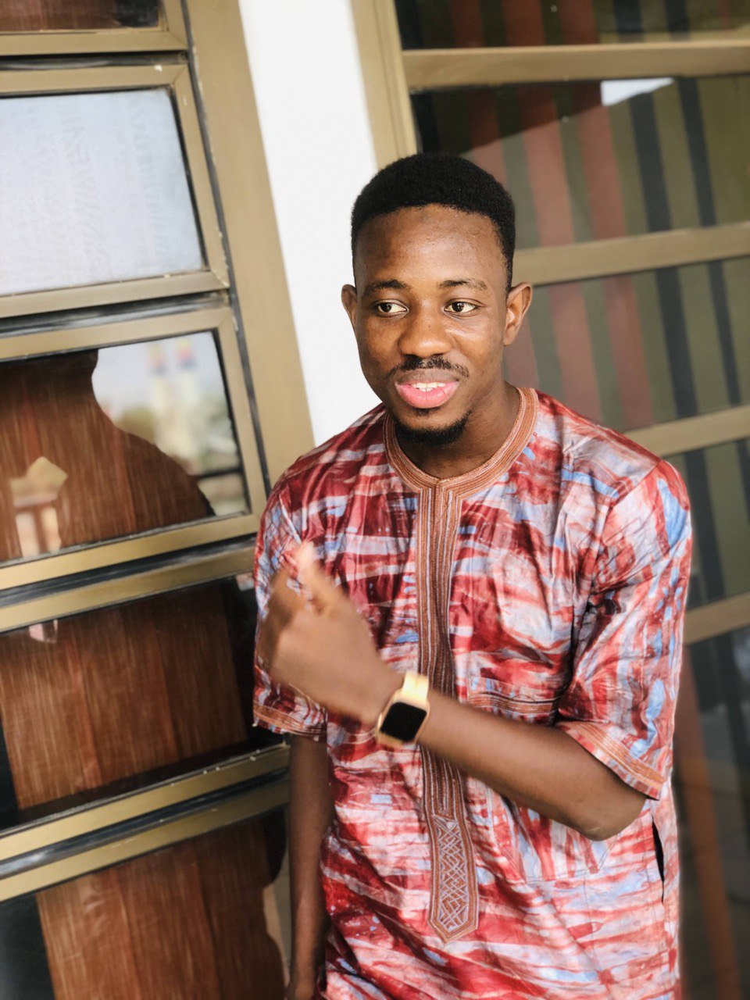

Si vous êtes à la recherche d'une application mobile ou d'un site web pour votre entreprise ou votre projet,
n'hésitez pas à me contacter.
Je suis en mesure de créer des applications et des sites web personnalisés pour répondre à vos besoins spécifiques.
Que vous ayez besoin d'une application pour iOS ou Android, ou d'un site web pour présenter votre entreprise en ligne, je suis là pour vous aider.
N'hésitez pas à me faire signe pour discuter de votre projet et voir comment je peux vous aider.